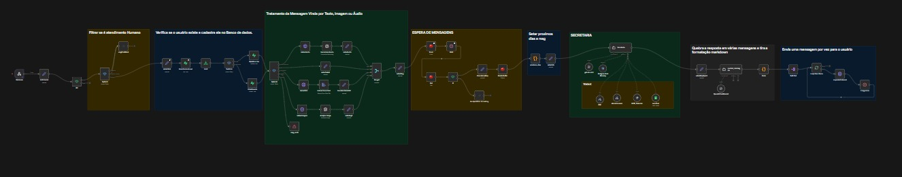

Olá, eu sou
Ruan Jeremias Cabral
Transformo lógicas complexas e automações com IA em soluções eficientes de ponta a ponta.
Sobre Mim
Sou Desenvolvedor Full Stack com forte atuação na criação de integrações e automações robustas. Tenho experiência prática no desenvolvimento de sistemas backend, APIs REST e manipulação de dados avançada. Utilizo o vibecoding e ferramentas de IA generativa (Claude, Cursor) para acelerar o desenvolvimento, prototipação e arquitetura de engenharia de software inteligente.
Projetos em Destaque
Motor de Financiamento Automotivo
API RESTful desenvolvida em Java com Spring Boot e PostgreSQL. Realiza o cálculo de viabilidade financeira aplicando regras de negócio dinâmicas baseadas na renda e entrada do cliente.
Landing Page Interativa
Interface web responsiva construída do zero utilizando as tecnologias base da web (HTML5, CSS3 moderno e JavaScript Vanilla) focada em conversão e experiência do utilizador.
Manipulação de DOM & APIs
Aplicação interativa rodando inteiramente no lado do cliente. Foco na manipulação de dados em tempo real, consumo de APIs públicas e gestão de estado sem frameworks.
Processamento e Análise
Script construído em Python para extração, tratamento e automação de rotinas de dados, aproveitando bibliotecas modernas para geração de relatórios e otimização de tarefas lógicas.
Agentes Virtuais e Automação B2B
Arquitetura de fluxos complexos no n8n. Criação de assistentes de IA (LangChain) integrados com Chatwoot, Kommo CRM, WhatsApp (Evolution API) e Google Calendar (MCP).

Vamos construir algo juntos?
Seja para automatizar um processo complexo, criar um agente de IA ou desenvolver uma aplicação do zero, estou à disposição.
Enviar E-mail